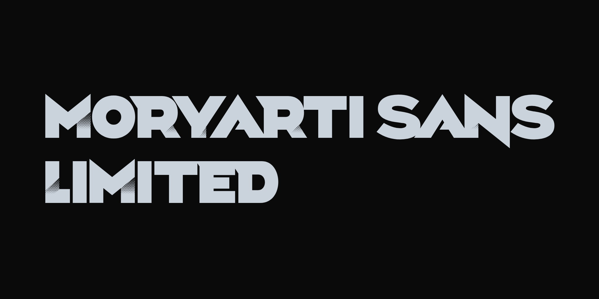
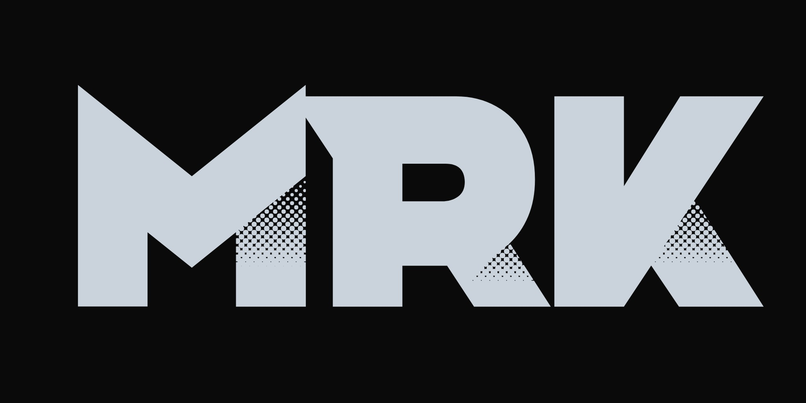
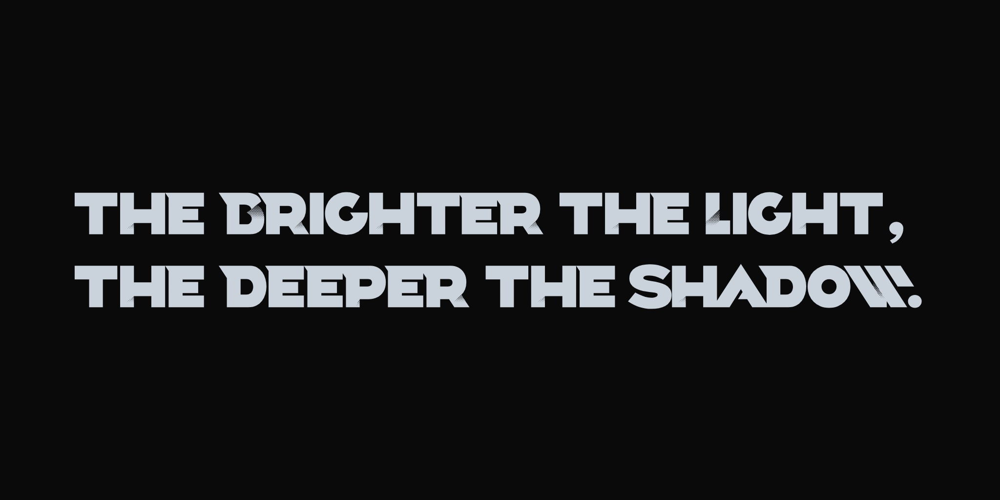
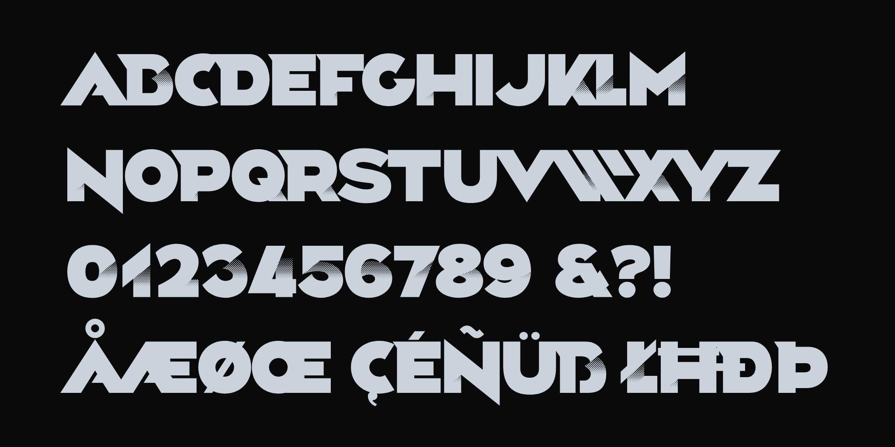

Moryarti Sans Limited is a display typeface drawn from the logotype of MORYARTI inc., a creative design studio in Asakusa, Tokyo — a district long known for its craftsmen and small workshops. The studio works by a simple idea: the brighter the light, the deeper the shadow. The typeface is built on it. To contribute, see github.com/MORYARTI-inc/moryarti-sans-ltd.

Its capitals are heavy and geometric. Stems are straight, diagonals are cut at one angle throughout, and the round letters are drawn from near-perfect circles. In many letters and figures, a stroke does not simply end: it dissolves into a printed halftone, exactly where a neighbouring stroke would cast its shadow. The shadow is part of the letter, so it stays with the letter wherever it is set.

The halftone follows strict rules. It is drawn as rows of small round dots on a diagonal lattice; the dots overlap into the solid stroke at the bottom and grow smaller towards the top, so the stroke dissolves upwards into the shadow's edge. The light always comes from the same direction, and the shadows start at only a few fixed heights shared across the alphabet. As a result the shadows stay consistent across a line of text, the way they would on letters cut from card and lit on a table. To keep the dots crisp, the font is drawn on a 4000-unit em.

Moryarti Sans Limited is a capitals-only design in a single weight. Lowercase input sets the same capital forms, so text can be typed in any case and keep one appearance. The character set covers the Google Fonts Latin Core: accented letters are built from the base letters and the marks, and the marks also attach to letters in running text. Figures carry the halftone too.

The typeface is meant for large sizes: headlines, posters, signage and branding, where the halftone has room to be seen. At smaller sizes the dots merge into a soft tone, while the letters keep their heavy, geometric outline.